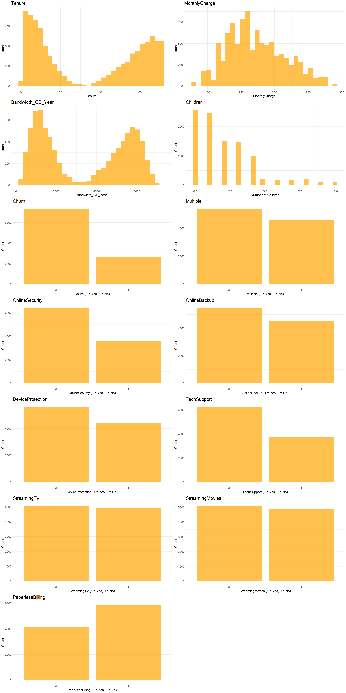

[1] 2.88D208 Predictive Modeling. Task 1
College of Information Technology, Western Governors University
Part I: Research Question
“What factors impact customer tenure?”
A1. The average customer Tenure is 35.5 months or 2.88 years.
I want to investigate the factors that impact customer tenure since letting a customer go rather than retaining them can be a significant detriment to the company’s profit, as noted by Amy Gallo of Harvard Business Review: “…acquiring a new customer is anywhere from five to 25 times more expensive than retaining an existing one” (Gallo, 2014).
A2. this analysis aims to create a multiple linear regression model that will assist in predicting customer tenure. Knowing the factors that increase or decrease the customer’s tenure will help the executives make data-informed decisions that will benefit the company and keep the customer happy.
Part II: Method Justification
B1. There are 4 assumptions of linear regression (Z. Bobbit, 2020).
A linear relationship exists between the dependent and independent variables.
The variance of the residuals follows a normal distribution.
The residuals are homoscedastic. In other words, the residual plot should not show any signs of a pattern.
The residuals are independent. The residuals cannot be dependent on the surrounding points. While there are only 4 assumptions to a linear model, other factors must be considered (G. Martin, n.d.).
Multi-collinearity should be minimized so that multiple variables do not tell the same story. Multi-collinearity occurs when the independent variables are correlated with each other.
Outliers of residuals. Residuals can have high leverage and outside of 2 standard deviations, meaning that they have a large impact on the coefficients of the data and are outliers. Just like any other outlier, these outliers should be investigated further to determine if they should be removed or retained.
B2. I will be using R within R-Studio to perform this analysis. While Python is capable of performing this same statistical analysis, it was not designed specifically for this purpose. R, on the other hand, was specifically designed for statistical analysis (Ihaka, n.d., p. 12). Due to this, R seems to be the more logical choice for performing statistical tasks.
B3. Tenure is a continuous variable representing the months a customer has been with the company, making it a valuable metric for understanding customer retention. It can be influenced by numerous variables, both numeric and categorical, such as the numeric value of bandwidth_gb_year or the categorical variable stating if the customer subscribes to StreamingTV services.
Part III: Data Preparation
C1. I need to drop irrelevant columns and convert data types to more appropriate ones to get the data ready. Some categorical variables have more than 8000 unique entries, which will also be dropped. I will not create any dummy variables because R automatically creates dummy variables, or indicator variables, into the linear model when a categorical variable is passed into the left of the ~, so long as the categorical variable is a factor datatype. So, I will be converting the remaining categorical variables to a factor. The numeric variables will be a mixture of integer and numeric, depending on the values. I will rename the survey resonses to something more intitive than ‘Item1’.
C2. The dependent variable I’m explaining is ‘Tenure’. For reasons I mentioned eariler, I removed several columns of irrelevant data. After running stepwise regression on the remaining selected variables, using stepAIC() command, I was left with the following variabels to use in my model:
[1] "MonthlyCharge" "Bandwidth_GB_Year" "Children"
[4] "Churn" "Multiple" "OnlineSecurity"
[7] "OnlineBackup" "DeviceProtection" "TechSupport"
[10] "StreamingTV" "StreamingMovies" "PaperlessBilling" MonthlyCharge Bandwidth_GB_Year Children Churn Multiple
Min. : 79.98 Min. : 155.5 Min. : 0.000 0:7350 0:5392
1st Qu.:139.98 1st Qu.:1236.5 1st Qu.: 0.000 1:2650 1:4608
Median :167.48 Median :3279.5 Median : 1.000
Mean :172.62 Mean :3392.3 Mean : 2.088
3rd Qu.:200.73 3rd Qu.:5586.1 3rd Qu.: 3.000
Max. :290.16 Max. :7159.0 Max. :10.000
OnlineSecurity OnlineBackup DeviceProtection TechSupport StreamingTV
0:6424 0:5494 0:5614 0:6250 0:5071
1:3576 1:4506 1:4386 1:3750 1:4929
StreamingMovies PaperlessBilling
0:5110 0:4118
1:4890 1:5882
C3. Generate univariate and bivariate visualizations of the distributions of the dependent and independent variables, including the dependent variable in your bivariate visualizations.

C4. Describe your data transformation goals that align with your research question and the steps used to transform the data to achieve the goals, including the annotated code.
C5. Provide the prepared data set as a CSV file.
Part IV: Model Comparison and Analysis
Note: Your responses to the task prompts must be provided in a document file. Unless otherwise specified, responses to PA requirements that are included in a Python or RStudio notebook will not be accepted.
D. In a document file, compare an initial and a reduced linear regression model by doing the following:
1. Construct an initial multiple linear regression model from all independent variables that were identified in part C2.
2. Justify a statistically based feature selection procedure or a model evaluation metric to reduce the initial model in a way that aligns with the research question.
3. Provide a reduced linear regression model that follows the feature selection or model evaluation process in part D2, including a screenshot of the output for each model.
E. Analyze the data set using your reduced linear regression model by doing the following in a document file:
1. Explain your data analysis process by comparing the initial multiple linear regression model and reduced linear regression model, including the following element:
• a model evaluation metric
2. Provide the output and all calculations of the analysis you performed, including the following elements for your reduced linear regression model:
• a residual plot
• the model’s residual standard error
3. Provide an executable, error-free copy of the code used to support the implementation of the linear regression models using a Python or R file.
Part V: Data Summary and Implications
Note: Your responses to the task prompts must be provided in a document file. Unless otherwise specified, responses to PA requirements that are included in a Python or RStudio notebook will not be accepted.
F. Summarize your findings and assumptions by doing the following in a document file:
1. Discuss the results of your data analysis, including the following elements:
• a regression equation for the reduced model
• an interpretation of the coefficients of the reduced model
• the statistical and practical significance of the reduced model
• the limitations of the data analysis
2. Recommend a course of action based on your results.
Part VI: Demonstration
G. Provide a Panopto video recording that includes the presenter and a vocalized demonstration of the functionality of the code used for the analysis of the programming environment, including the following elements:
• an identification of the version of the programming environment
• a comparison of the initial multiple linear regression model you used and the reduced linear regression model you used in your analysis
• an interpretation of the coefficients of the reduced model
Note: The audiovisual recording should feature you visibly presenting the material (i.e., not in voiceover or embedded video) and should simultaneously capture both you and your multimedia presentation.
Note: For instructions on how to access and use Panopto, use the “Panopto How-To Videos” web link provided below. To access Panopto’s website, navigate to the web link titled “Panopto Access,” and then choose to log in using the “WGU” option. If prompted, log in using your WGU student portal credentials, and then it will forward you to Panopto’s website.
To submit your recording, upload it to the Panopto drop box titled “Regression Modeling – NBMx | D208.” Once the recording has been uploaded and processed in Panopto’s system, retrieve the URL of the recording from Panopto and copy and paste it into the Links option. Upload the remaining task requirements using the Attachments option.
H. List the web sources used to acquire data or segments of third-party code to support the application. Ensure the web sources are reliable.
I. Acknowledge sources, using in-text citations and references, for content that is quoted, paraphrased, or summarized.
J. Demonstrate professional communication in the content and presentation of your submission.
.
.
.
Web Sources:
Bobbitt, Z. (2020, January 8). The four assumptions of linear regression. Statology. Retrieved November 17, 2024, from https://www.statology.org/linear-regression-assumptions/
Gallo, A. (2014, October 29). The value of keeping the right customers. Harvard Business Review. Retrieved November 17, 2024, from https://hbr.org/2014/10/the-value-of-keeping-the-right-customers
Ihaka, R. (n.d.). The R Project: A brief history and thoughts about the future. The University of Auckland. Retrieved November 17, 2024, from https://www.stat.auckland.ac.nz/~ihaka/downloads/Otago.pdf
Larose, C. D., & Larose, D. T. (2019). Data science using Python and R. Wiley.
Martin, G. [R Programming 101]. (n.d.). Multiple regression - making sure that your assumptions are met [Video]. YouTube. https://www.youtube.com/watch?v=1lwvNLDSu0s&t=1092s